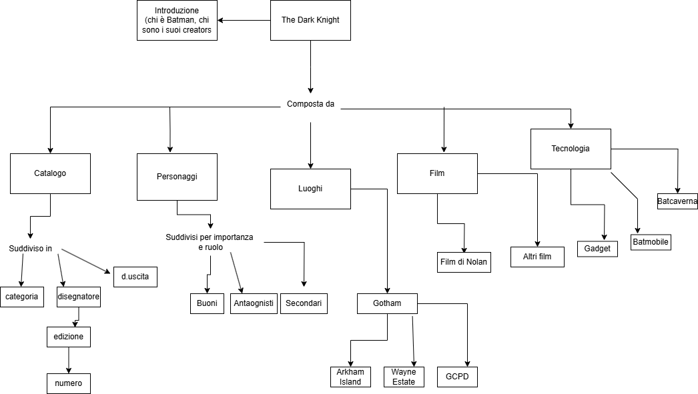
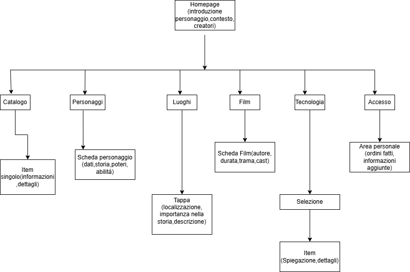
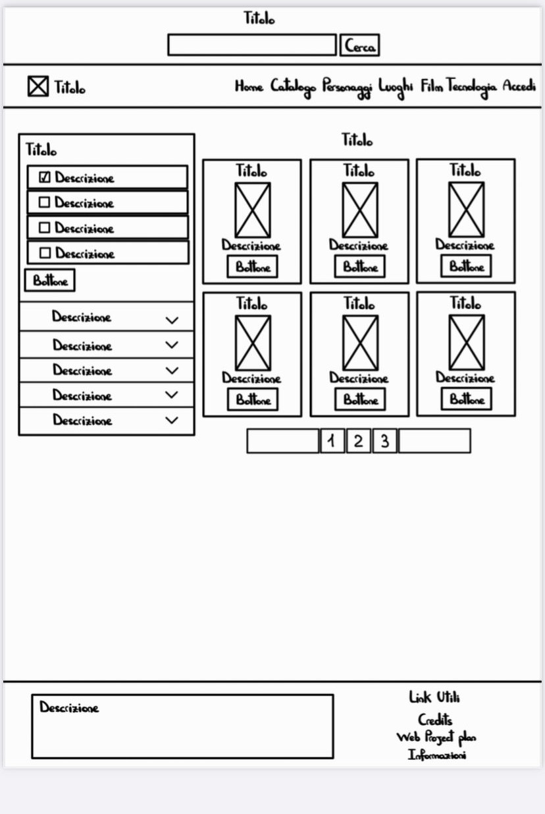
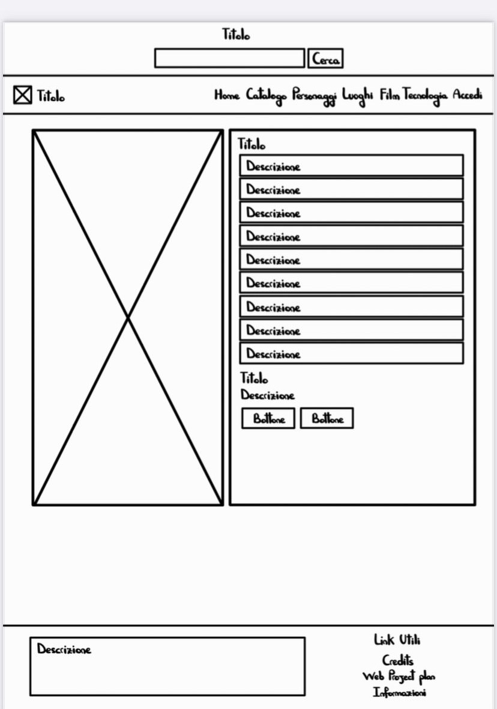
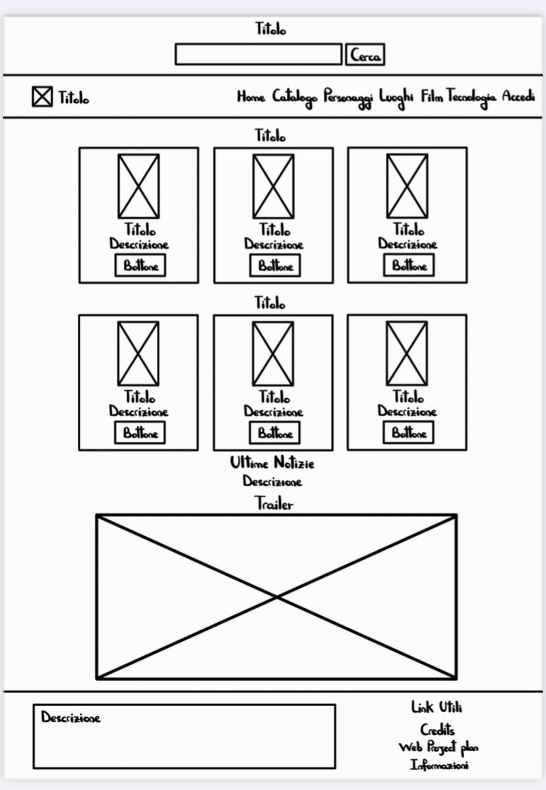
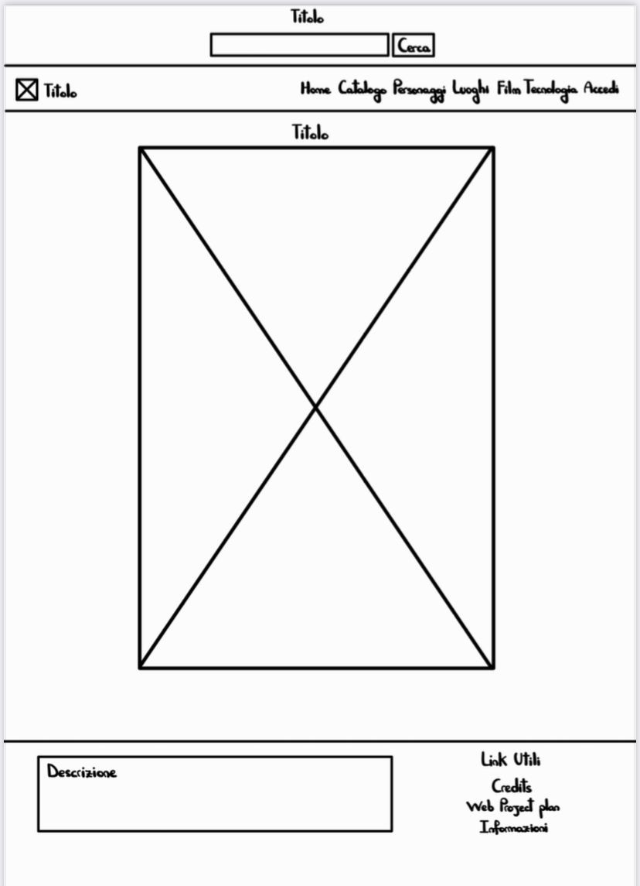
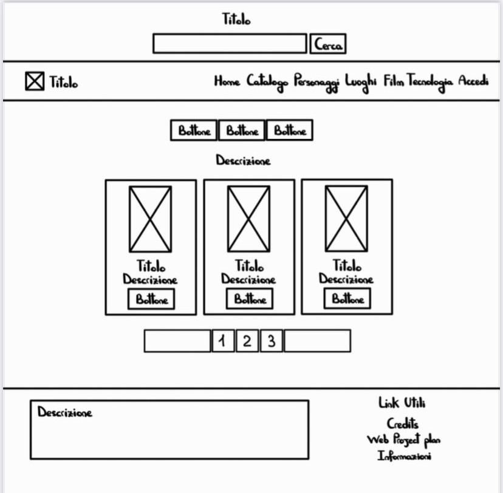
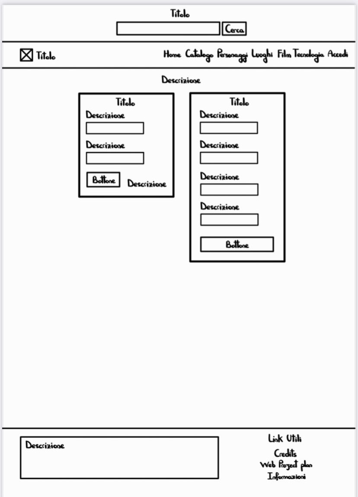
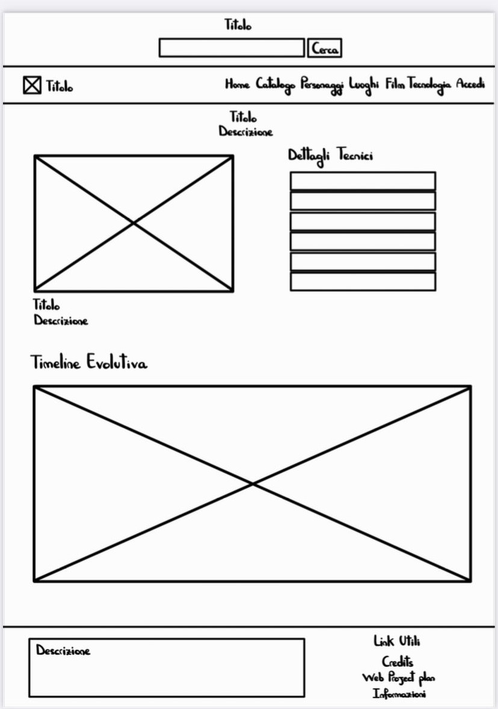

WEB PROJECT PLAN
Idea (Abstract)
Il progetto nasce con l’intento di realizzare un sito web interamente dedicato al mondo di Batman. La piattaforma introdurrà agli utenti chi è Batman, le sue caratteristiche e i suoi creatori, ed i personaggi del suo mondo.
Tra i contenuti principali del sito, sarà possibile esplorare l’evoluzione della Batmobile, nonché immergersi nella città di Gotham City, scoprendone i luoghi più celebri.
La piattaforma permetterà agli utenti di navigare attraverso le pagine del sito con pulsanti link, mentre per quanto riguarda il catalogo permetterà una ricerca avanzata suddivisa in categorie (fumetti, gadget, action figure, videogiochi), disegnatori, date di uscite e tant’altro ancora.
Brief
Finalità
- Informare gli utenti sulla storia di Batman, i suoi creatori e i personaggi principali del suo universo
- Offrire contenuti speciali come evoluzione della Batmobile
- Fornire un catalogo interattivo
Target di riferimento
Il progetto fa riferimento agli amanti del personaggio e del mondo di Batman, ma anche a chi ne ha sempre sentito parlare ma non ha mai avuto occasione di potersi informare in maniera esaustiva ed interattiva allo stesso tempo.
Accesso
The Dark Knight Site sarà progettato per assicurare una visualizzazione veloce su qualsiasi dispositivo.
Contenuti e dati
Il sito presenterà un’ampia raccolta di immagini, sarà presente un video, e le card che verranno occupate da delle immagini raffiguranti personaggi.
Benchmark
Analisi di mercato
Esistono diversi siti dedicati al mondo di Batman, ma la maggior parte si concentra principalmente sull’aspetto collezionistico (fumetti, gadget…), trascurando la narrativa del personaggio e del suo mondo.
DC Comics – Official Website
Punti di forza: Design professionale, contenuti ufficiali e costantemente aggiornati.
Criticità: Batman occupa solo una piccola sezione del sito.
Batman Wiki (Fandom)
Punti di forza: Quantità enorme di informazioni, dettagli e collegamenti interni.
Criticità: Design confusionario, contenuti soggettivi.
Come si distingue questo progetto?
Esperienza narrativa completa, struttura organizzata, design coerente, catalogo filtrabile, contenuti selezionati e verificati.
Struttura
Mappa concettuale
La mappa è composta da una parte introduttiva in cui viene presentato brevemente il personaggio di Batman e i suoi creatori. Successivamente, la mappa si articola in cinque sezioni principali: Catalogo, Personaggi, Luoghi, Film e Tecnologia. Ogni personaggio è classificato in base alla sua importanza e al ruolo che ricopre. All'interno della sezione dedicata ai luoghi, vengono identificati tre ambientazioni principali situate nella città di Gotham. La sezione Film è suddivisa tra quelli diretti da Christopher Nolan e gli altri film in cui compare Batman. Infine, la sezione Tecnologia raccoglie tre sotto-aree: i gadget, la Batmobile e la Batcaverna.
Schema delle dipendenze
- Homepage: introduzione al sito e la sua nascita, contesto, creatori
- Catalogo: Catalogo contenente una collezione che sia possibile suddidere per categorie, disegnatore, edizione, numero, data
- Personaggi: Suddivis in base al loro ruolo e alla loro importanza buoni, antagonisti, secondari
- Luoghi:Tappe principali nel mondo di Batman Gotham, Arkham, Wayne Estate, GCPD
- Film: trilogia di Nolan, altri adattamenti con presente Batman
- Tecnologia: Batcaverna, Batmobile, gadget
- Accesso: area personale utente dove è possibile per utente accedere o registrars
Categorie
Ogni oggetto presente nel catalogo, come fumetti, gadget o action figure, è corredato da una scheda descrittiva dettagliata. Di seguito un esempio, tratto da uno dei fumetti più celebri dell’universo di Batman:
Batman: The Killing Joke
- Autore: Alan Moore
- Disegnatore: Brian Bolland
- Editore: DC Comics
- Data di pubblicazione: Marzo 1988
- Formato: Copertina rigida
- Pagine: 64
- Lingua: Italiano
- Antagonista: Joker
- Pubblico consigliato: Dai 14 anni in su
Trama
In questa tragica e intensa graphic novel, il Joker tenta di dimostrare che chiunque può diventare folle dopo "una brutta giornata". Un racconto oscuro e psicologico che approfondisce le origini del clown del crimine e il rapporto con Batman.
Layout
Wireframes
Questa sezione mostra la rappresentazione grafica delle pagine principali e della loro struttura.
Homepage
Catalogo
Item
Film
Luoghi
Personaggi
Accedi
Tecnologia
Usabilità
- Navbar sticky permette di navigare all'intenrno di tutte le pagine presenti nel sito
- Box tematici, per suddividere i contenuti in evidenza dal personaggio del giorno e dalle curiosità
- Scrittura informativa con descrizioni brevi e con tono informale
- Icone Bootstrap per accessibilità visiva
- Si utilizza una palette cromatica composta da giallo,bianco e nero
Servizi
Sistemi di browsing
- Catalogo filtrabile per categoria, autore, data,e molto di più
- Contenuti organizzati: fumetti, gadget, action figure, videogiochi
- Timeline interattiva: per esplorare evoluzione della batmobile
- Mappa interattiva di Gotham
- Personaggi organizzati in base al ruolo ed alla importanza
- Tecnologia organizzata in base al'utilizzo nel campo(covo,strada,combattimento)
Utilities e strumenti
- Hover su pulsanti, card, modali
- Carousel e pagination per contenuti numerosi
- Sticky Navbar: La barra di navigazione rimane fissa in alto per facilitare l’accesso alle varie sezioni
Sviluppi futuri
- Area community
- Timeline interattiva sulle tute di Batman
- Approfondimento più specifico sulla mappa di Gotham
- Classifica degli scontri di batman più entusiasmanti
Bibliografia e Sitografia
- Font Rajdhani – Google Fonts
- Diagrams.net per mappe, e schede delle dipendenze
- GitHub Pages per la pubblicazione
- Visual Studio Code per lo sviluppo
Per la progettazione del layout e della struttura del sito, ho fatto riferimento al sito di Alessando Rocchi sul topic di Dylan Dog e alle slide del corso.